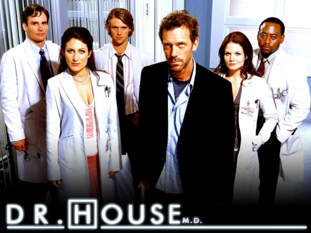
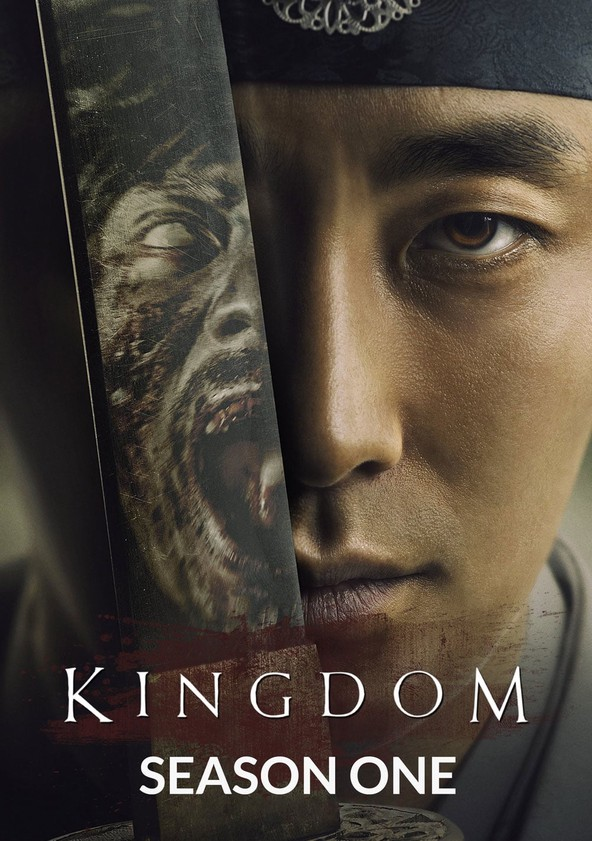
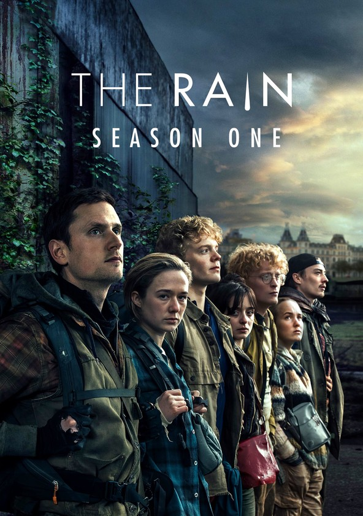
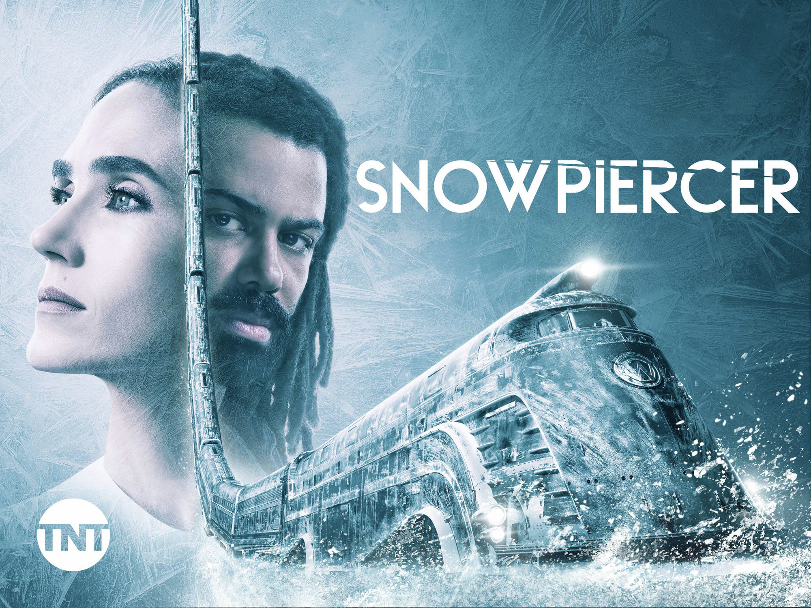
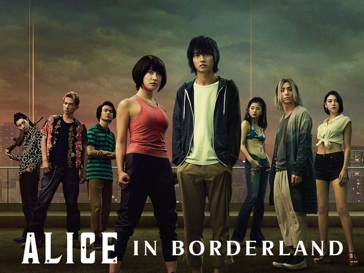
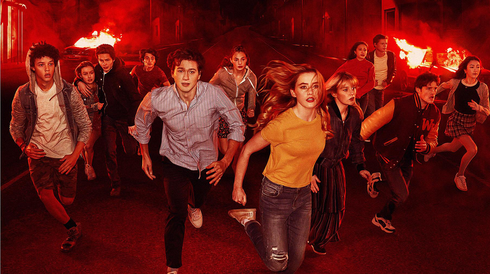
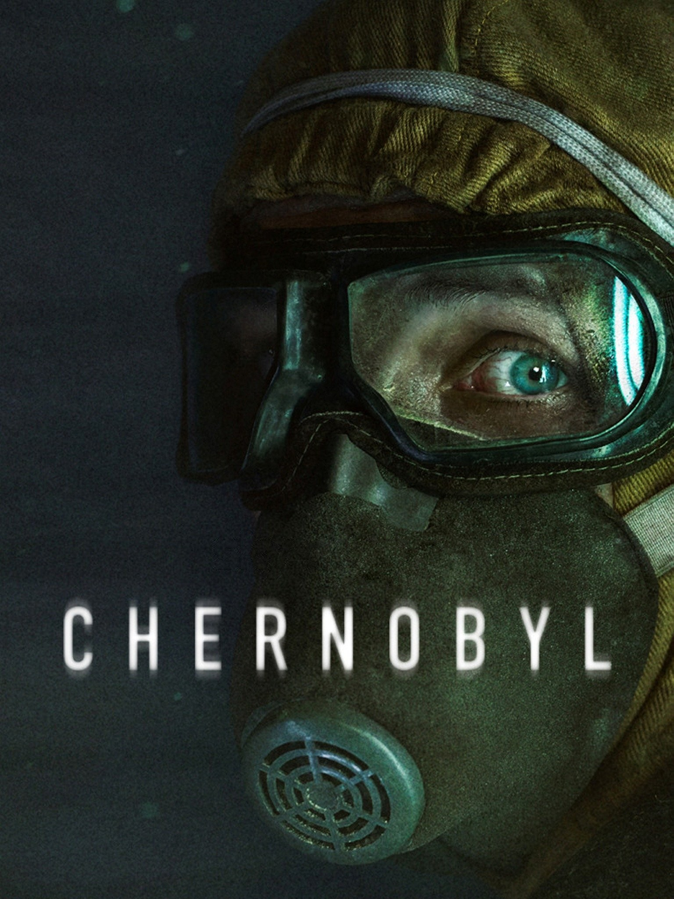
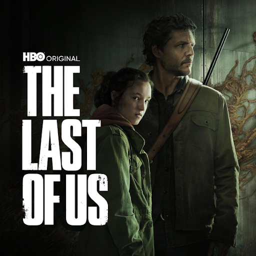

Series
-
Dr. House
 Follow the brilliant yet unconventional Dr. Gregory House and his team of diagnosticians as they tackle puzzling medical cases at Princeton-Plainsboro Teaching Hospital. House's abrasive personality and unorthodox methods make for compelling drama as they strive to save lives while navigating their own personal struggles. The series delves deep into ethical dilemmas, showcasing the moral ambiguity of medical decision-making and the toll it takes on both patients and practitioners. As House and his team confront complex diagnoses and confront their own demons, they form bonds that transcend the hospital walls, exploring themes of redemption, resilience, and the human condition. You can find it in: Netflix, Prime Video -
Kingdom
 Set in Korea's medieval Joseon era, "Kingdom" is a gripping fusion of historical drama and zombie horror. As a mysterious plague spreads across the land, Crown Prince Lee Chang embarks on a perilous journey to uncover the truth behind the outbreak and protect his kingdom from the undead threat. Amidst political intrigue and betrayals, Chang must navigate a treacherous landscape while battling both the living and the dead. The series masterfully blends pulse-pounding action with rich character development, offering a fresh take on the zombie genre while exploring themes of power, corruption, and survival. You can find it in: Netflix -
The Rain
 In this Danish post-apocalyptic thriller, siblings Simone and Rasmus emerge from a bunker six years after a deadly virus carried by rainfall wiped out much of the population. As they search for safety and answers, they encounter other survivors and face the harsh realities of a world where water is now a deadly enemy. Along their journey, they grapple with trust, betrayal, and the lengths they will go to protect each other in a world where humanity teeters on the brink of extinction. The series paints a haunting portrait of survival in the face of overwhelming odds, exploring the fragility of civilization and the resilience of the human spirit. You can find it in: Netflix -
Snowpiercer
 Based on the graphic novels and film of the same name, "Snowpiercer" is set aboard a perpetually moving train circling a frozen Earth after a climate engineering experiment gone wrong. The rigid class system aboard the train sparks a revolution led by the oppressed tail section passengers, challenging the balance of power and societal order. As the revolution unfolds, alliances are formed, secrets are revealed, and the true nature of humanity is laid bare in the confined space of the train. The series deftly explores themes of inequality, justice, and the consequences of unchecked power, offering a gripping and thought-provoking narrative that transcends its sci-fi premise. You can find it in: Netflix -
Alice in Borderland
 Adapted from the manga, "Alice in Borderland" follows Ryohei Arisu and his friends as they find themselves trapped in a deserted Tokyo where they must participate in deadly games to survive. As they navigate various challenges and confront their pasts, they unravel the mysteries of this alternate reality and strive to find a way home. Along the way, they form alliances, face betrayals, and grapple with the existential questions raised by their predicament. The series combines heart-pounding action with intricate world-building, exploring themes of identity, choice, and the nature of reality in a thrilling and suspenseful narrative. You can find it in: Netflix -
Black Mirror
 A modern anthology series that explores the dark and often dystopian consequences of society's relationship with technology. Each standalone episode offers a thought-provoking glimpse into possible futures, examining themes such as artificial intelligence, virtual reality, social media, and the human condition. Through its chilling and thought-provoking narratives, "Black Mirror" challenges viewers to reconsider the impact of technology on society and the ethical dilemmas that arise from its unchecked advancement. The series serves as a cautionary tale, urging reflection on the ways in which technology shapes our lives and the potential consequences of its misuse.
You can find it in: Netflix
A modern anthology series that explores the dark and often dystopian consequences of society's relationship with technology. Each standalone episode offers a thought-provoking glimpse into possible futures, examining themes such as artificial intelligence, virtual reality, social media, and the human condition. Through its chilling and thought-provoking narratives, "Black Mirror" challenges viewers to reconsider the impact of technology on society and the ethical dilemmas that arise from its unchecked advancement. The series serves as a cautionary tale, urging reflection on the ways in which technology shapes our lives and the potential consequences of its misuse.
You can find it in: Netflix
-
The Society
 When a group of teenagers returns home from a canceled school trip, they discover their affluent New England town is eerily deserted. Cut off from the outside world, they must forge their own society, navigating power struggles, moral dilemmas, and the mysteries surrounding their disappearance while trying to survive. As they grapple with issues of governance, justice, and identity, tensions rise and alliances shift in a microcosm of society at large. "The Society" offers a compelling exploration of human nature and societal dynamics, raising questions about authority, community, and the complexities of adolescence in a world without rules. You can find it in: Netflix (The serie is cancelled :c so only have one season). -
Chernobyl
 A gripping miniseries that chronicles the events leading up to and the aftermath of the Chernobyl nuclear disaster in 1986. Through the perspectives of key figures such as scientists, firefighters, and government officials, it exposes the truth behind the catastrophe and the human cost of negligence and cover-ups. As the true scale of the disaster unfolds, heroes emerge amidst the chaos, risking their lives to contain the fallout and prevent further devastation. "Chernobyl" is a harrowing portrayal of a man-made tragedy and a tribute to those who sacrificed everything to confront it. The series serves as a stark reminder of the importance of accountability, transparency, and the consequences of hubris in the face of scientific progress. You can find it in: Prime Video. -
The Boys
 In a world where superheroes are celebrities controlled by a corrupt corporation, a group of vigilantes known as "The Boys" seek to expose their dark side and hold them accountable for their reckless actions. Fueled by personal vendettas and a desire for justice, they confront the powerful supes while facing their own moral dilemmas. As they delve deeper into the conspiracy surrounding the superheroes, they uncover shocking truths about their pasts and the lengths to which some will go to maintain their grip on power. "The Boys" is a subversive take on the superhero genre, exploring themes of morality, celebrity culture, and the corrupting influence of power in a world where no one is truly incorruptible.
You can find it in: Prime Video
In a world where superheroes are celebrities controlled by a corrupt corporation, a group of vigilantes known as "The Boys" seek to expose their dark side and hold them accountable for their reckless actions. Fueled by personal vendettas and a desire for justice, they confront the powerful supes while facing their own moral dilemmas. As they delve deeper into the conspiracy surrounding the superheroes, they uncover shocking truths about their pasts and the lengths to which some will go to maintain their grip on power. "The Boys" is a subversive take on the superhero genre, exploring themes of morality, celebrity culture, and the corrupting influence of power in a world where no one is truly incorruptible.
You can find it in: Prime Video
-
The Last of Us
 Based on the acclaimed video game, "The Last of Us" follows Joel and Ellie, two survivors navigating a post-apocalyptic America ravaged by a fungal infection that turns humans into violent creatures. Their journey across dangerous landscapes tests their resilience and forces them to confront the depths of their humanity in a world where survival comes at a cost. Along the way, they encounter allies and enemies alike, each with their own motivations and agendas. "The Last of Us" is a gripping tale of survival, redemption, and the enduring bond between two unlikely companions in a world where hope is a scarce commodity. You can find it in: HBO Max